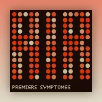

Exercices CSS
Exercices CSS
Recréez des pochettes d'albums en écrivant seulement du CSS.
Chaque exercice vous demande de recréer une pochette d'album à partir d'un fichier HTML qu'il est interdit de modifier. Suivez les requis dans l'ordre.
Contenu du cours

AIR - Premiers Symptômes Recréez la pochette de l'album Premiers Symptômes du groupe de musique électronique AIR. Exercice Nirvana - Nevermind Recréez la pochette de l'album Nevermind du mythique groupe grunge Nirvana. Exercice Pink Floyd - The Dark Side of the Moon Recréez la pochette de l'album The Dark Side of the Moon du groupe Pink Floyd. Exercice